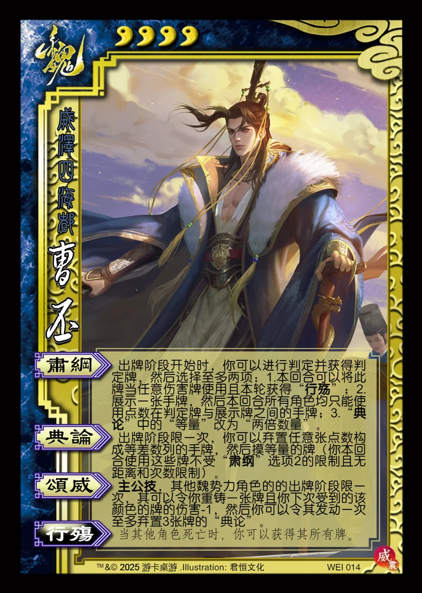

点击卡面查看大图
魏
威曹丕
♥4威泽四海都
肃纲
出牌阶段开始时，你可以进行判定并获得判定牌，然后选择至多两项：1.本回合可以将此牌当任意伤害牌使用且本轮获得“行殇”；2.展示一张手牌，然后本回合所有角色均只能使用点数在判定牌与展示牌之间的手牌；3.“典论”中的“等量”改为“两倍数量”。
典论
出牌阶段限一次，你可以弃置任意张点数构成等差数列的手牌，然后摸等量的牌（你本回合使用这些牌不受“肃纲”选项2的限制且无距离和次数限制）。
颂威主公技
主公技，其他魏势力角色的的出牌阶段限一次，其可以令你重铸一张牌且你下次受到的该颜色的牌的伤害-1，然后你可以令其发动一次至多弃置3张牌的“典论”。
行殇衍生
当其他角色死亡时，你可以获得其所有牌。